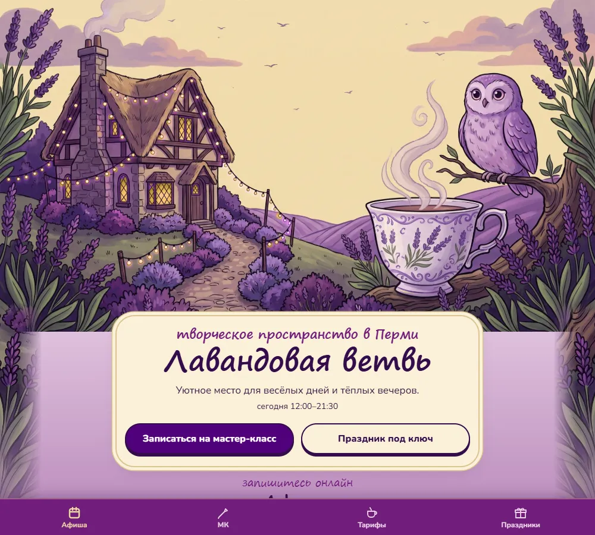
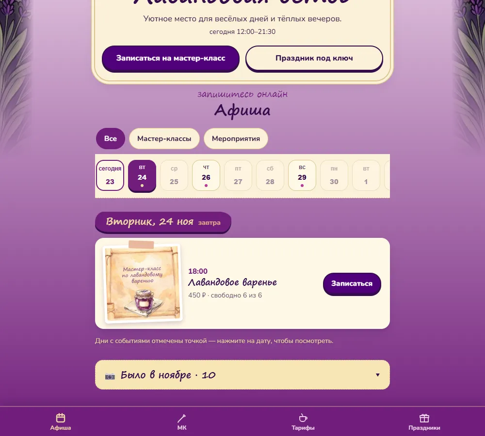
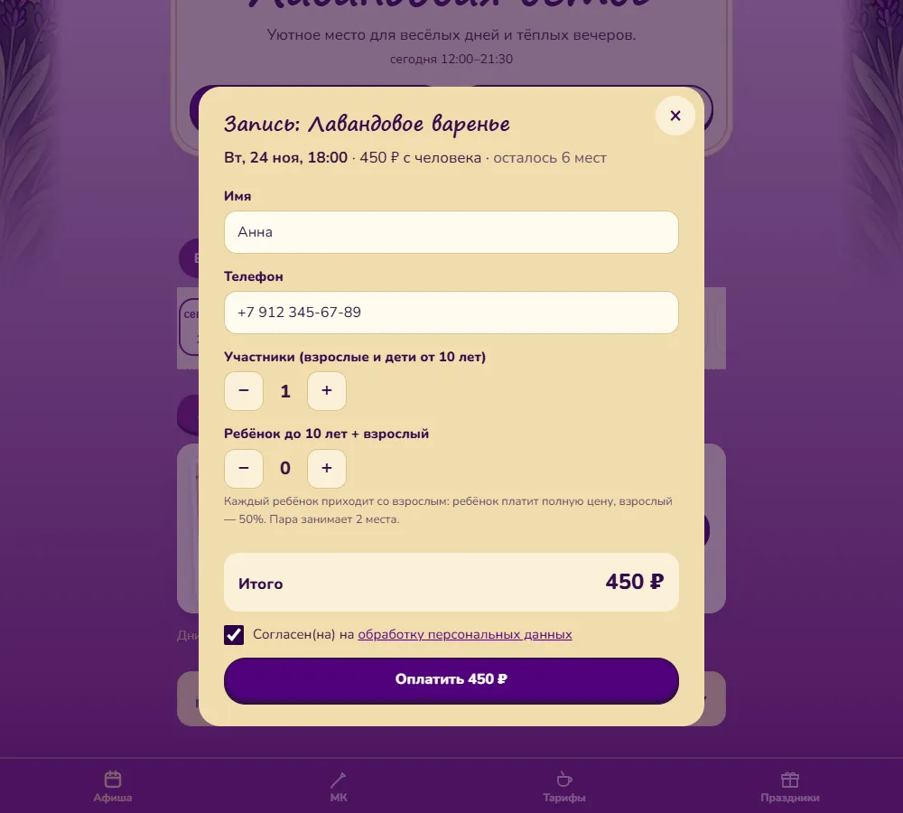
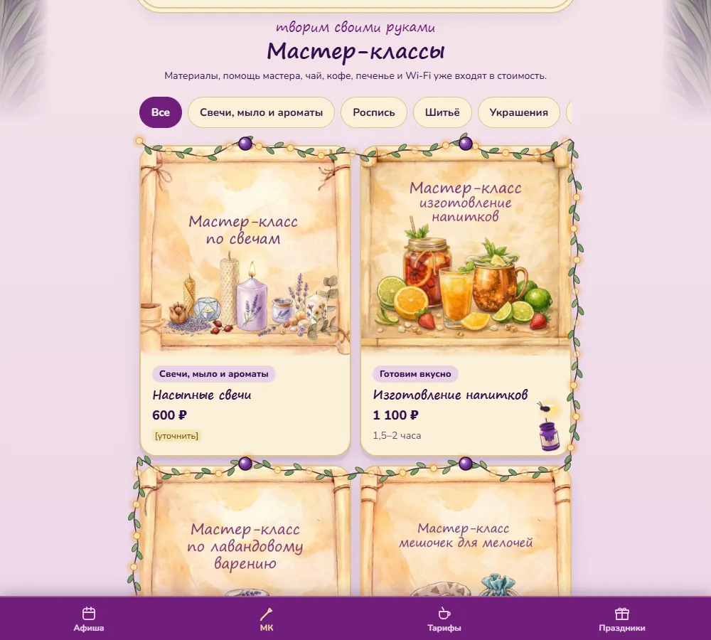
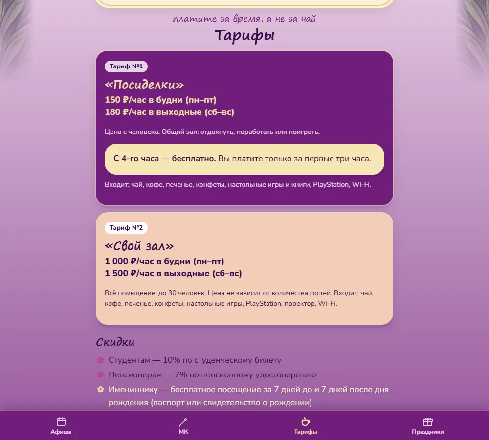
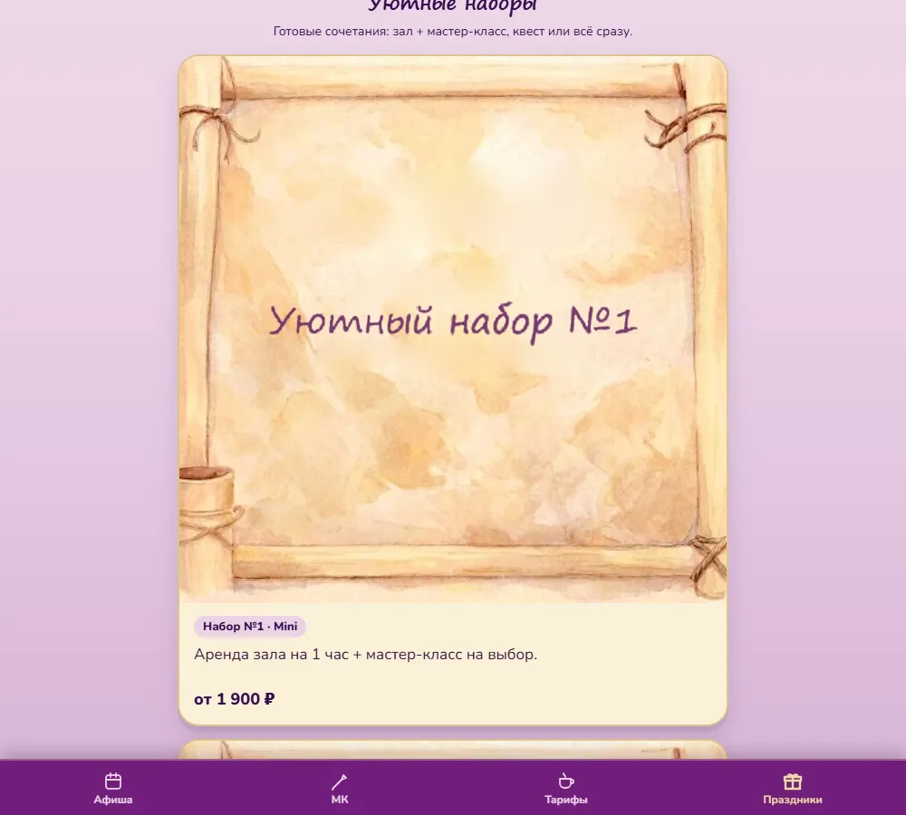
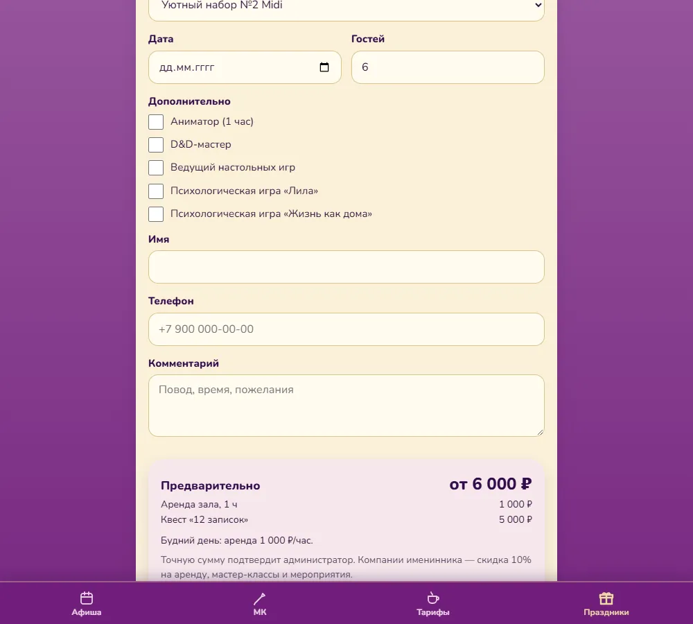
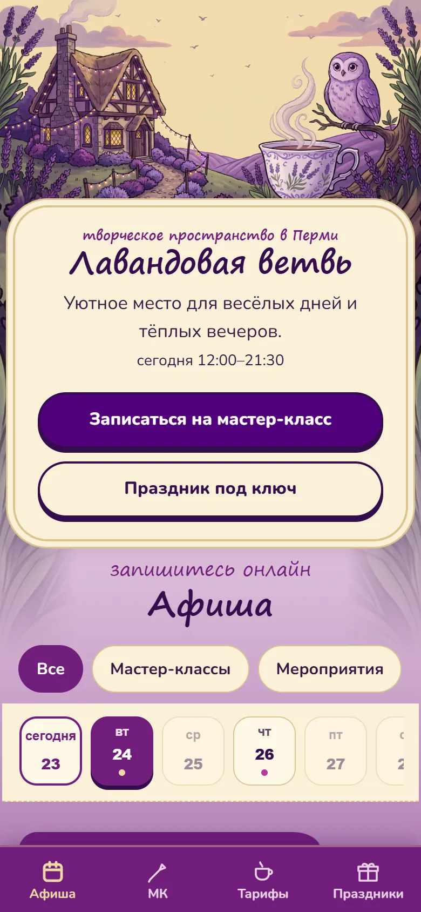
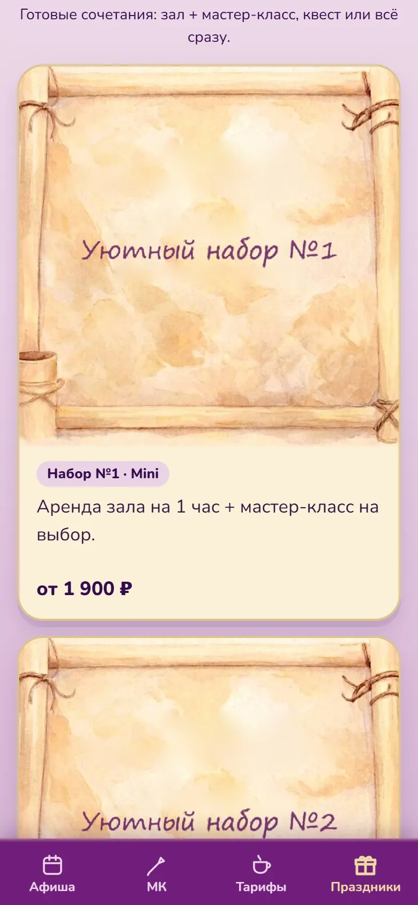
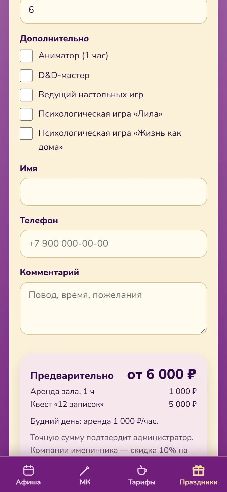

🎁 Telegram-бот для администратора
Присылает в Telegram каждую заявку и запись из приложения, ни одна не потеряется в сообщениях.
≈ 10 000 ₽
Расписание мастер-классов теряется в ленте постов, и гости не находят свободную дату. В мини-приложении афиша, свободные места и запись собраны в одном окне ВКонтакте.
Гость сразу выбирает мастер-класс или праздник. Не нужно листать ленту в поисках нужного поста.

Снимает вопрос «а когда ближайший?»: дни с событиями отмечены точкой, свободные места видны сразу.

Снимает «надо писать в личку и ждать»: участники, детская скидка и итог считаются в одном окне, оплата картой или СБП.

Снимает «что у вас есть и сколько стоит»: 25 мастер-классов с ценой, длительностью и фото, фильтр по темам.

Снимает «сколько стоит просто посидеть»: два тарифа и скидки студентам, пенсионерам и имениннику.

Снимает «праздник сложно организовать»: три набора, в которые уже входят зал, мастер-класс или квест, с ценой «от».

Снимает страх неизвестной суммы: гость выбирает формат, часы и число гостей и сразу видит цену. Заявка уходит без предоплаты, администратор только подтверждает дату.

Приложение сделано в первую очередь для телефона: им пользуются прямо из сообщества ВКонтакте.



Гость видит сумму до звонка и бронирует дату, не внося деньги, поэтому первый шаг почти ничего не стоит. Я выбрал этот механизм, потому что он ведёт к самому крупному чеку в приложении, ≈ 6 000 ₽.
Срок: 1 неделя, стоимость ≈ 60 000 ₽
🎁 В подарокПрисылает в Telegram каждую заявку и запись из приложения, ни одна не потеряется в сообщениях.
≈ 10 000 ₽
Короткие ролики о мастер-классах и праздниках, которые ведут гостей в приложение.
≈ 15 000 ₽
Экономия ≈ 25 000 ₽
Хотите так же для своего творческого пространства — запишитесь на бесплатную консультацию!
Стек: HTML, CSS, JavaScript без сборщиков, VK Bridge, GitHub Pages.